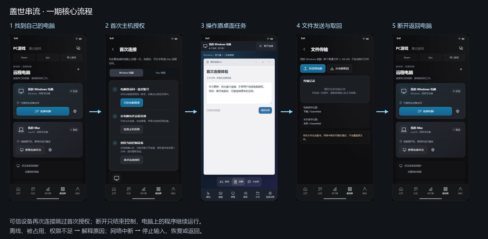

GAMEHUB · 一期产品评审
一个远程桌面，承接游戏、临时办公和电脑上的 AI 任务。先完成授权、操作、文件取回和退出恢复。
打开交互 Demo 直接看 Mac 看 APP 横屏

Demo 是交互模拟，不是真实串流引擎。六种主控与被控组合是产品目标，开放取决于逐组合实际测试。角色评审不代表真人访谈或成功率统计。
下载飞书导入 Markdown · 下载方案 Markdown · 下载配图包